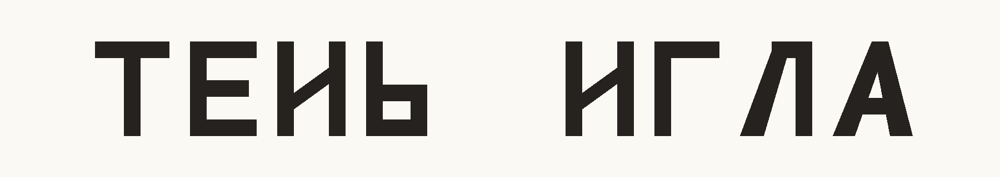
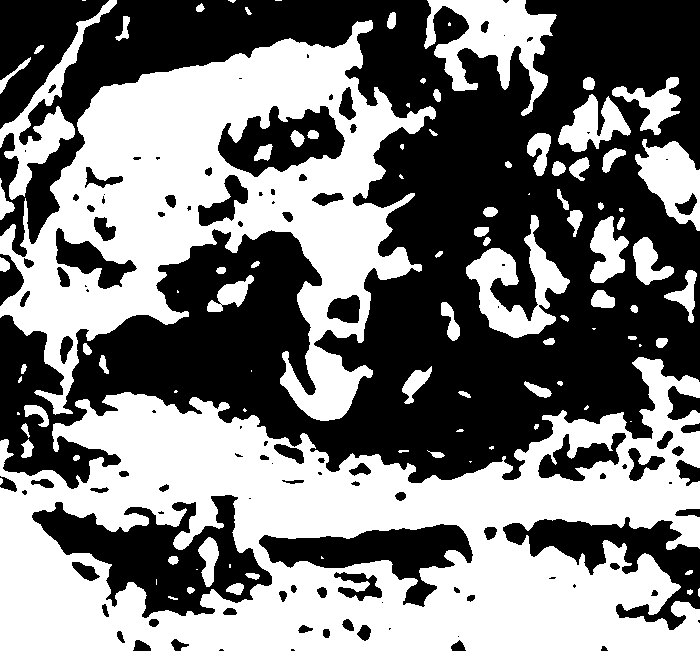

Ментализация
IМозг приносит версию
В 1981 году психологи Роберт Ремез, Филип Рубин, Дэвид Пизони и Томас Каррелл сделали странную запись. Они заменили человеческий голос тремя чистыми тонами, которые повторяли движение важных речевых частот. От голоса остался меняющийся свист. Можно ли в нём услышать речь?
Попробуй тот же эффект на нашей записи.
Есть ли здесь речь? Если слышится фраза — какие слова удалось разобрать?
«Он ответил коротко, потому что очень устал».
Запись осталась прежней. Но теперь в свисте можно расслышать слова.
Когда слушателям не говорили, что в тонах скрыта речь, они описывали запись как фантастические звуки, музыку или компьютерные сигналы. Когда исследователи сказали, что это фраза, слова начали проступать сквозь свист. Звук не изменился. Изменилось то, как его слушали.
Со зрением происходит то же самое. Посмотри на два слова:

Внутри слова мы почти не замечаем неопределённости. Смысл целого подсказывает, какую букву увидеть: не нейтральный знак, а «Н» или «И».
Теперь ещё один опыт. Сначала попробуй понять, что изображено в пятнах. Затем открой исходную фотографию и вернись назад.

После оригинала в пятнах не изменился ни один пиксель. Но теперь корову почти невозможно развидеть: взгляд сам собирает из пятен её голову, спину и ноги. Нового изображения не появилось. Изменилось то, что мозг приносит к этим пятнам.
Свист, знак и пятна остались прежними. Но после подсказки мозг услышал в свисте фразу, увидел в знаке букву, а в пятнах — корову.
Учёные объясняют эту работу по-разному. Одно из объяснений — предиктивное кодирование. Мозг не ждёт, пока мир сложится в ясную картину. Он заранее предполагает, что происходит, и сверяет догадку с новыми звуками и образами. Если новые данные не подтверждают догадку, её приходится менять.
Обычно это помогает: мы узнаём речь в шуме и целое по нескольким признакам. Но иногда догадка звучит громче самого сигнала, и додуманное кажется частью того, что мы действительно увидели или услышали.
IIОткуда у треугольников взялись намерения
В 1944 году психологи Фриц Хайдер и Марианна Зиммель показали людям короткое видео. На экране движутся два треугольника и кружок, рядом — прямоугольник с дверью.
Полторы минуты — четыре шага
Сформулируй одну фразу так, будто рассказываешь тому, кто не видел ролик.
Перескажи ещё раз, но без «напал», «испугался», «погнался», «спрятался» и других слов о чувствах, характерах и намерениях фигур.
Выбери то, что ближе. Здесь нет правильного ответа.
Важно заметить границу: движения были на экране, а характеры и намерения появились уже в нашем рассказе.
В исходном опыте 33 человека из 34 рассказали о характерах и намерениях фигур. Только один человек просто описал, как они двигались.
Мы увидели больше, чем было показано. На экране двигались фигуры, а в рассказе появились нападающий, испуганный герой, погоня и укрытие. Переход от движения к намерению происходит так быстро, что мы обычно его не замечаем.
С человеческим лицом мы поступаем похоже. Хичкок поставил один и тот же кадр со своим нейтральным выражением после двух разных сцен.
Лицо остаётся тем же, но после разных сцен мы видим в нём разные чувства. Они не написаны на лице — их подсказывает соседний кадр.
В отношениях роль соседнего кадра играет всё, что уже было между нами. Близкий пишет короткое «ок». Мы слышим не две буквы, а усталость, раздражение, холодность или спешку. Мы всё равно достраиваем смысл. Но иногда наше объяснение заглушает то, что человек скажет дальше.
IIIДва искажения
Мы как будто однажды сфотографировали человека и теперь приносим этот снимок на каждый разговор. Когда-то он ушёл от конфликта — значит, он всегда избегает. В детстве ему не хватало близости — значит, мы заранее знаем смысл каждого его слова. Но человек на снимке не растёт, не учится, не устаёт именно сегодня и не решает поступить иначе. Схема экономит усилие: живого человека больше не нужно узнавать заново.
Здесь вместо снимка появляется голос из прошлого. Иногда он действует как ожог: похожая интонация касается старой боли, и тело уже ждёт отвержения. Иногда фантом рождается из надежды: простая теплота звучит как обещание близости. Другой ещё ничего не решил, а мы уже слышим собственный страх или желание его голосом — и отвечаем своему эху.
Чужой голос могут заглушить и страх, и надежда. В одном случае мы заранее слышим отвержение, в другом — обещание близости. Схема оставляет человека в прошлом, а фантом заставляет его говорить голосом нашего прошлого. В обоих случаях настоящий ответ уже ничего не меняет.
IVМентализация: версия, которую можно изменить
Если перестать строить версии невозможно, а принять свою версию за человека опасно, нам нужна не ещё одна, более правильная догадка. Нужно другое отношение к любой догадке.
Чтобы понять, как человек учится отличать собственное переживание от происходящего снаружи, клинические психологи и психоаналитики Мэри Таргет и Питер Фонаги обратились к развитию ребёнка. В 1996 году они описали этот процесс, опираясь на исследования детской игры, развития мышления и клинические наблюдения.
Один режим проще всего представить так. Ребёнок просыпается ночью и уверен, что под кроватью чудовище. Он не думает: «Мне представилось чудовище, поэтому я испугался». Для него страх и опасность совпали: если мне страшно, значит чудовище здесь. Таргет и Фонаги назвали это психической эквивалентностью — внутреннее переживается как точный слепок внешнего мира.
Другой режим Таргет и Фонаги назвали «режимом понарошку». Название взято из игры, где палка становится лошадью, а коробка — домом. Ребёнок может держать сразу две версии: это лошадь в игре и палка в действительности. Беда начинается не в воображении, а когда объяснение теряет связь с реальностью. Можно долго и убедительно говорить о чувствах, но ни собственное переживание, ни ответ другого уже ничего в нём не меняют.
Постепенно ребёнок учится связывать внутреннее и внешнее, не путая их: чудовища в комнате может не быть, а страх при этом настоящий. Мысль влияет на то, что я вижу, но не становится самим миром. Ответ другого влияет на моё понимание, но не стирает мой опыт.
Во взрослом разговоре эта граница выглядит знакомо. «Мне страшно» легко превращается в «он хочет меня бросить» — так собственное переживание становится фактом о другом. Или мы строим настолько убедительное объяснение человека, что его живой ответ уже не может ничего изменить. В первом случае звучит фантом, во втором человек застывает в схеме.
Способность понимать свои и чужие поступки через возможные мысли и чувства, не принимая объяснение за факт, Фонаги и Таргет назвали ментализацией. Позже Фонаги и психиатр Энтони Бейтман построили на ней психотерапевтический подход. Терапевт в нём не разгадывает скрытый «настоящий мотив» человека. Он помогает замедлиться, отделить увиденное от додуманного, заметить собственное состояние и услышать, меняет ли ответ другого первую версию.
Ментализация — не чтение мыслей. Чтение мыслей обещает угадать, что у человека внутри. Ментализация начинается с признания: внутрь другого я не вижу. Я могу лишь строить версии о его мыслях, чувствах и намерениях — и допускать, что ошибся.
Это не то же самое, что эмпатия. Можно остро почувствовать чужую боль и неверно понять, из-за чего она возникла. Эмпатия даёт отклик на переживание. При ментализации мы замечаем и другого, и собственную реакцию, а его слова могут изменить наше объяснение.
Это не оправдание и не доверчивость. Понять, что человеком двигало, не значит согласиться с его поступком. Можно услышать ответ, увидеть повторяющееся поведение и всё равно отойти или поставить границу.
И это не вечное сомнение. Ментализация не требует после каждого «ок» устраивать расследование. Иногда достаточно заметить: «Сейчас я уже отвечаю на то, чего он ещё не сказал». Иногда действительно стоит спросить. Ближе всего ментализация не к точной расшифровке, а к разговору, в котором чужой ответ ещё способен сообщить тебе что-то новое.
— Ок.
Ему всё равно.
— Ну и отлично. Больше не буду отвлекать.
— Ок.
Мне послышалось «отстань». Но это пока моя версия.
— Слушай, твоё «ок» прозвучало для меня холодно. Что ты сейчас имел в виду?
Во втором разговоре догадка тоже есть. Разница не в спокойствии и не в правильной формулировке. Разница в том, что ответ другого ещё способен изменить понимание.
Но как заметить это в живом разговоре? Как услышать момент, когда знание о человеке превратилось в застывший снимок? Как отличить его голос от собственного эха — особенно если эхо звучит убедительнее? И как оставить место чужому ответу, не отказываясь от памяти и собственных границ?
Разобрать разговор, в котором ты уже ответил за другого
Статья помогает заметить схему и собственное эхо, но текст не возразит и не переспросит. На встрече можно принести один конкретный разговор: что в нём было сказано, что услышал ты и что успел додумать.
Группа помогает отделить слова другого от твоей версии — без попытки угадать его мотивы. В конце ты сам выбираешь следующий шаг: спросить, дослушать, обозначить границу или закончить разговор.
Встреча проходит в Zoom и длится три часа; в группе до 12 человек. Каждая встреча самостоятельна.
Запись открыта до , 24:00 мск.
Тема возвращается раз в семь недель.
Если формат не подойдёт, вернём деньги без анкет и выяснений.
Источники
- Remez R. E., Rubin P. E., Pisoni D. B., Carrell T. D. (1981). Speech Perception Without Traditional Speech Cues. Science.
- Davis M. — An Introduction to Sine-Wave Speech, MRC Cognition and Brain Sciences Unit, Cambridge. Записи в письме наши: голос Эда; синусоидальная версия получена анализом формант.
- Rao R. P. N., Ballard D. H. (1999). Predictive coding in the visual cortex. Nature Neuroscience.
- Heider F., Simmel M. (1944). An Experimental Study of Apparent Behavior. American Journal of Psychology.
- Target M., Fonagy P. (1996). Playing with reality: II. The development of psychic reality from a theoretical perspective. International Journal of Psychoanalysis.
- Fonagy P., Luyten P. (2009). A developmental, mentalization-based approach to the understanding and treatment of borderline personality disorder. Development and Psychopathology.
- Baumeister R. F. et al. (2001). Bad is stronger than good. Review of General Psychology.
- «Telescope: A Talk with Hitchcock» — передача Си-би-си, 1964.
- Двухтоновая картинка сделана нами по способу из работы Reining & Wallis (2024): The role of object knowledge in visual recognition. PeerJ.